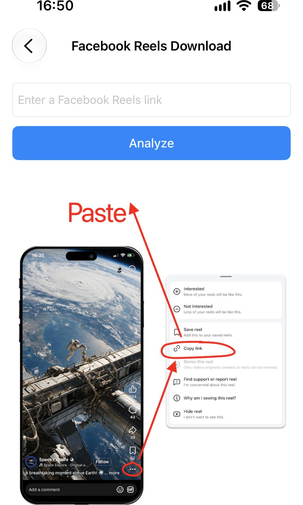
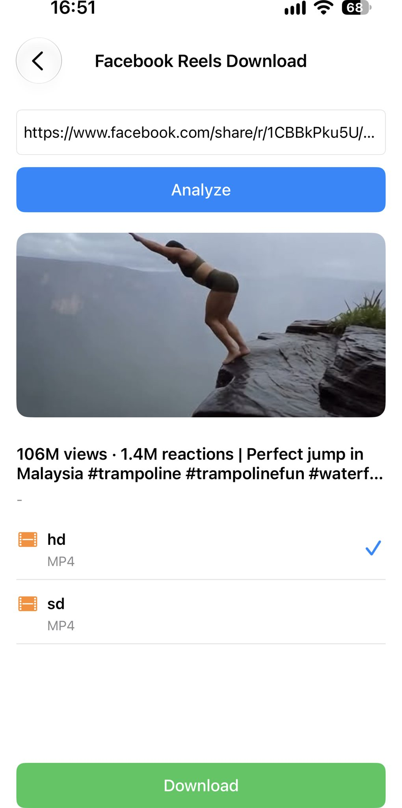

Facebook Reels를 저장하는 방법
Facebook Reel을 오프라인에서 보거나 나중에 공유하려고 하나요? ImageGet이면 간단합니다. Reel 링크를 붙여넣으면 앱이 동영상을 분석해 사진 앨범에 바로 저장합니다. 화면 녹화도, 외부 도구도 필요 없습니다. 단계별로 알려드릴게요.
ImageGet을 무료로 다운로드하세요 — Facebook Reels를 한 번의 탭으로 저장합니다.
ImageGet 다운로드1단계: ImageGet을 열고 Video Download 탭하기
ImageGet을 엽니다. 메인 화면에서 Video Download를 탭하세요. 동영상 도구가 모여 있는 곳입니다.

2단계: Facebook Reels Download 선택하기
이어서 Facebook Reels Download를 탭합니다. ImageGet이 Reels 모드로 바뀌고 링크를 기다립니다. 썸네일이 아니라 동영상 자체를 받게 됩니다.

3단계: Reel 링크 복사하기
Facebook 앱에서 저장할 Reel을 찾습니다. Reel의 ⋯ 버튼을 탭한 다음 링크 복사를 탭하세요. 컴퓨터 브라우저에서는 Reel을 열고 주소창의 URL을 복사하면 됩니다.

4단계: ImageGet에 붙여넣기
Reel 링크를 ImageGet에 붙여넣습니다. 앱이 동영상을 자동으로 분석하므로 검색할 것도, 기다릴 것도 없습니다. 잠시 뒤 다운로드할 수 있는 Reel이 표시됩니다.
5단계: Reel 다운로드하기
화질을 고르세요. 화질이 가장 좋은 hd 또는 용량을 아끼고 싶다면 sd를 선택한 뒤 Download를 탭합니다. Reel은 소리가 포함된 동영상으로 사진 앨범에 저장되어 Facebook을 열지 않고도 오프라인에서 언제든 다시 볼 수 있습니다.

Reels 다운로드 팁
- 무료 다운로드 — 무료 플랜에서는 동영상 다운로드가 3회 제공되며, Facebook Reels, YouTube Shorts, X (Twitter) 동영상에 모두 적용됩니다. Premium으로 업그레이드하면 횟수 제한 없이 저장할 수 있습니다.
- 화질 고르기 — hd는 화질을, sd는 용량을 우선할 때 고르세요.
- 화면 녹화 없이 — ImageGet이 Reel을 직접 다운로드하므로 다시 녹화하면서 생기는 화질 손실이 없습니다.
- 공유 링크도 됩니다 — Facebook 앱의 링크 복사로 얻은 주소는 짧은 facebook.com/share/r/… 형태여도 그대로 붙여넣으면 됩니다.
FAQ
Facebook Reels를 무료로 다운로드할 수 있나요?
네. 무료 플랜에 동영상 다운로드 3회가 포함되며, 이 횟수는 Facebook Reels, YouTube Shorts, X (Twitter) 동영상에 모두 적용됩니다. Premium으로 업그레이드하면 횟수 제한 없이 저장할 수 있습니다.
Facebook Reels는 소리와 함께 저장되나요?
네. Reels는 선택한 화질 그대로 소리가 포함된 동영상으로 사진 앨범에 저장됩니다.
Reels를 저장하려면 화면을 녹화해야 하나요?
아니요. ImageGet이 Reels를 직접 다운로드하므로 화면 녹화가 필요 없습니다.